Enemy interior graph samples
Green = spawn; colored nodes = organs; thick cyan path = graph diameter.
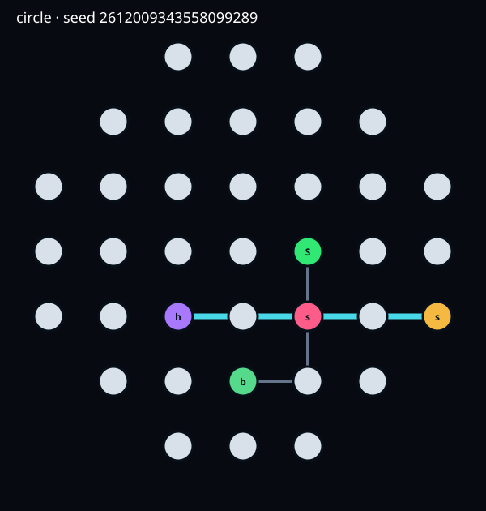
1. circle · 37 rooms · 7 connections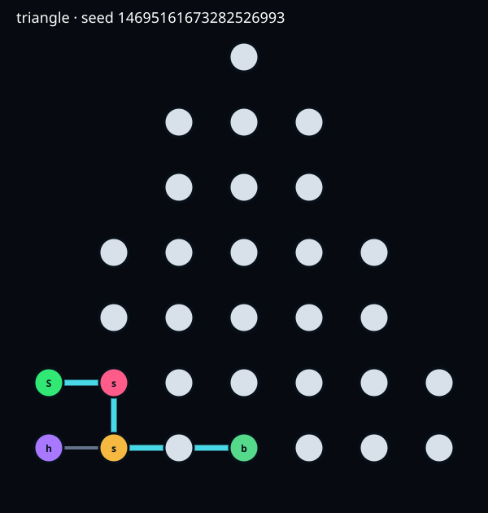
2. triangle · 31 rooms · 5 connections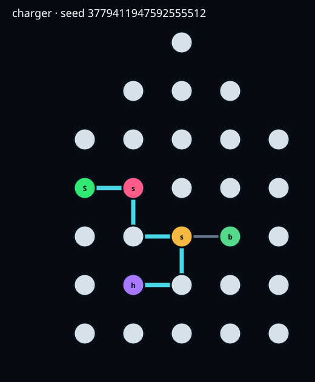
3. charger · 29 rooms · 6 connections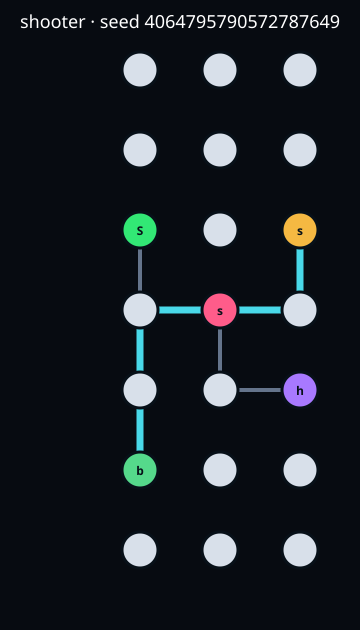
4. shooter · 21 rooms · 8 connections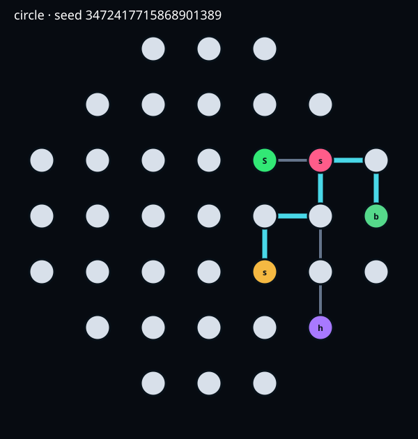
5. circle · 37 rooms · 8 connections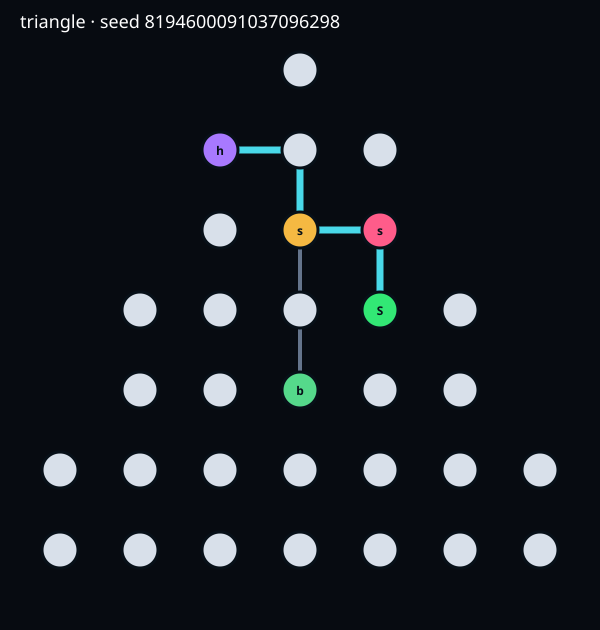
6. triangle · 31 rooms · 6 connections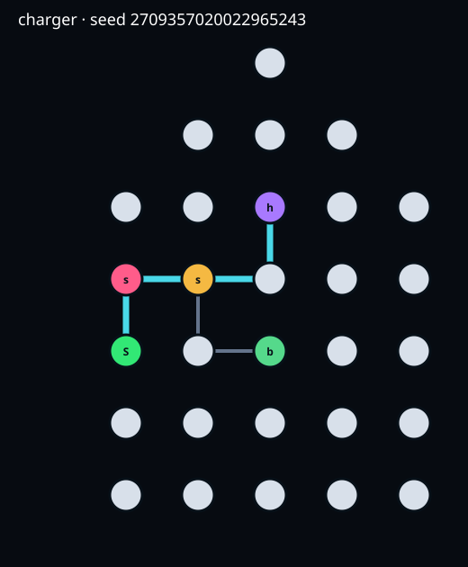
7. charger · 29 rooms · 6 connections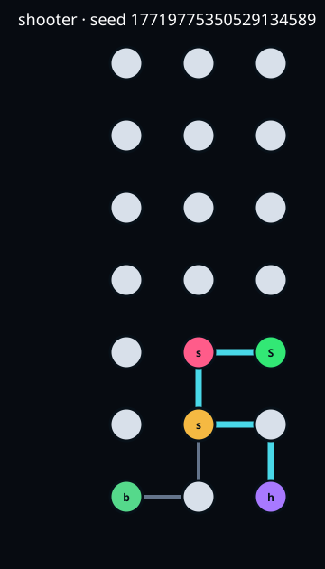
8. shooter · 21 rooms · 6 connections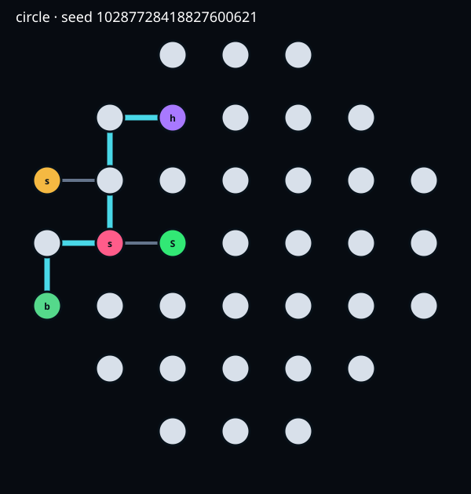
9. circle · 37 rooms · 7 connections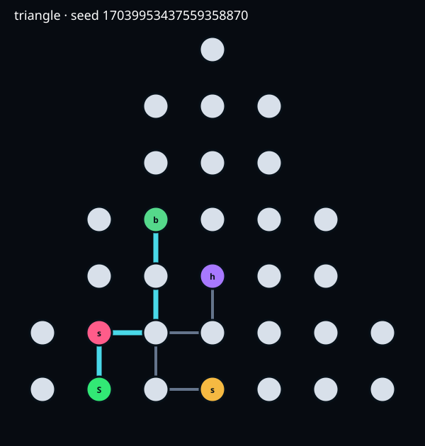
10. triangle · 31 rooms · 8 connections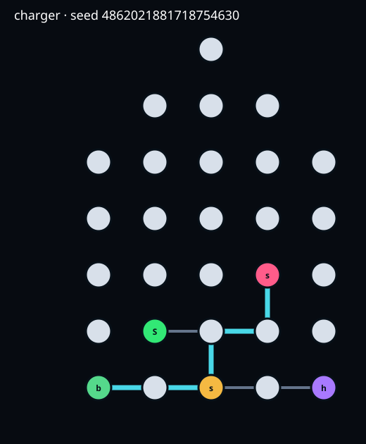
11. charger · 29 rooms · 8 connections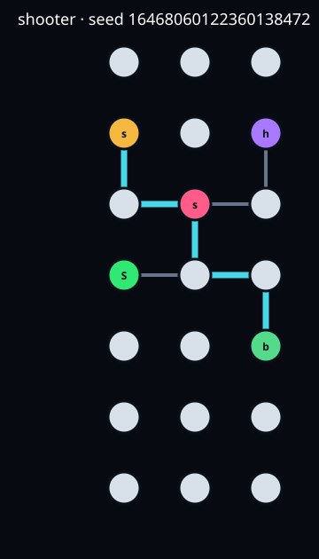
12. shooter · 21 rooms · 8 connections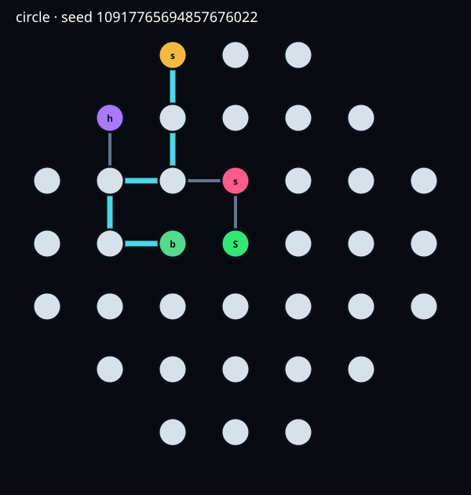
13. circle · 37 rooms · 8 connections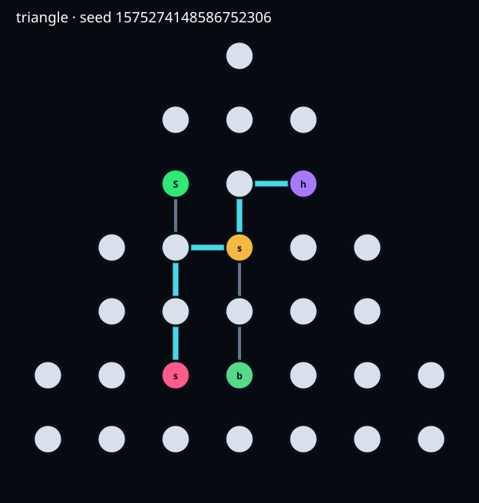
14. triangle · 31 rooms · 8 connections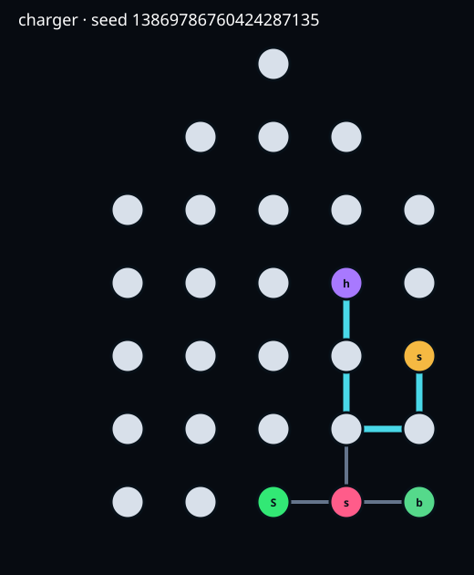
15. charger · 29 rooms · 7 connections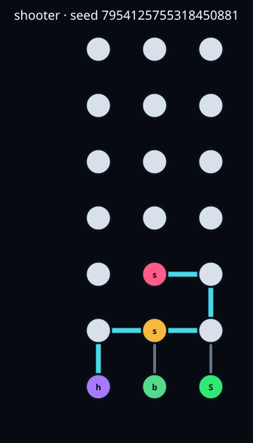
16. shooter · 21 rooms · 7 connections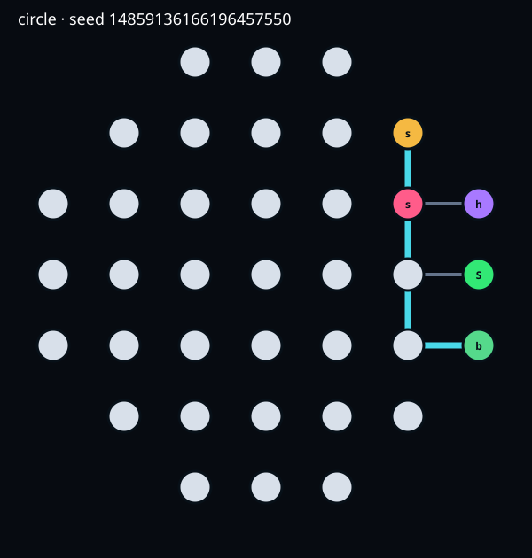
17. circle · 37 rooms · 6 connections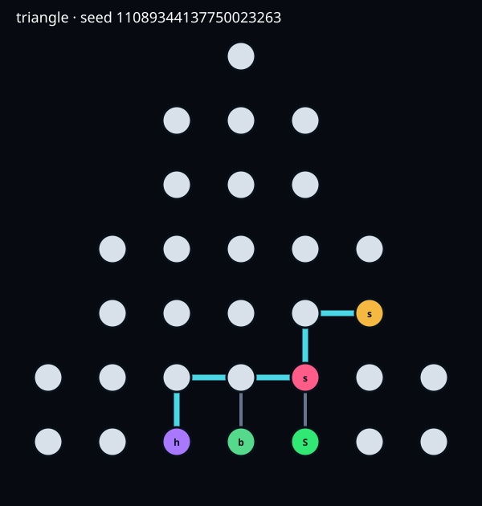
18. triangle · 31 rooms · 7 connections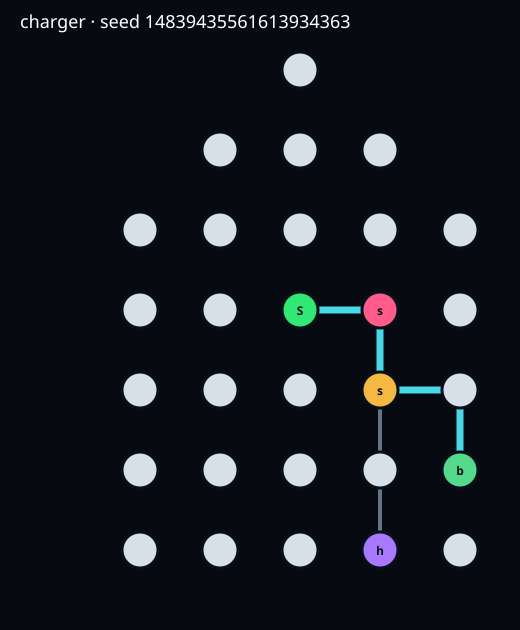
19. charger · 29 rooms · 6 connections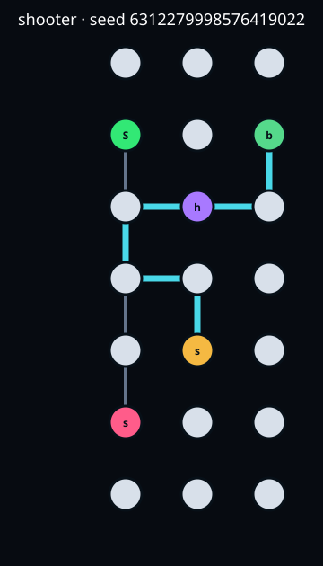
20. shooter · 21 rooms · 9 connections